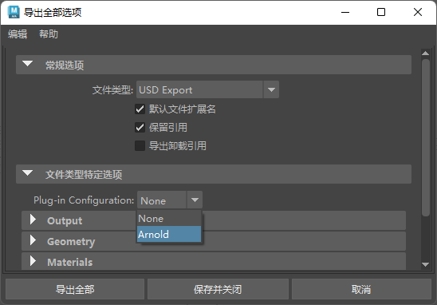
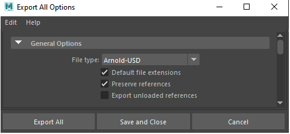
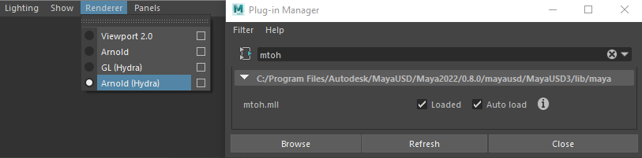
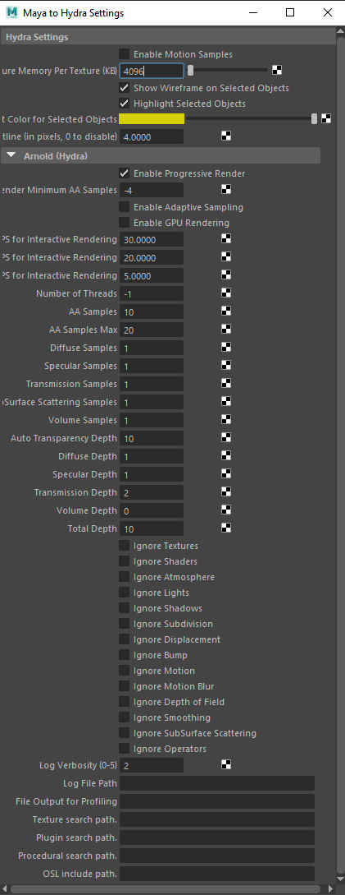

| 延伸阅读 |
|---|
| 有关 Arnold 形状和形状参数的完整文档，请参见《Arnold 用户手册》中的形状。 |
此页面介绍 MtoA 中的 USD（通用场景描述）兼容性。
Render -r arnold -cam |stage1|stageShape1,/path/to/camera在 Maya USD 0.15 或更高版本中，提供了一个名为“插件配置”(Plug-in Configuration) 的导出选项。将此选项切换到 Arnold 会让 MayaUSD 除了导出 MayaUSD 内容外，还导出所有必要的 Arnold 数据。然后，可以通过运行 kick scene.usd. 来独立渲染场景。此外，如果使用 MayaUSD 将此文件作为代理形状加载或通过 aiStandIn 来加载，则可以在另一个场景之上渲染此文件。

已知限制：
将此类 USD 文件导入 Maya 时，不会将所有 Arnold 数据导回 Maya。
为了开始导出 USD 文件，需要创建摄影机，以便 MayaUSD 将其导出。MayaUSD 将忽略默认的“透视”摄影机。
请注意，如果“插件配置”(Plug-in Configuration)列表中未显示“Arnold”，则意味着您的 MtoA 版本与已安装的 MayaUSD 版本不兼容。

Arnold -> 场景导出 -> 将所有内容/当前选择导出为 USD(Arnold -> Scene Export -> Export All/Selection to USD)
在 Maya USD 中，还有一个名为 mtoh.mll 的插件 (Maya to Hydra)。利用此插件，您可以在视口中启用 Arnold (Hydra) 查看器。

Maya to Hydra 设置：
